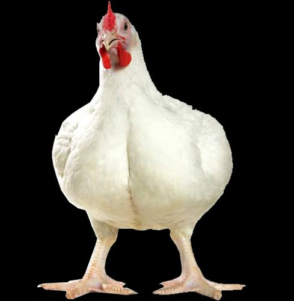

Center for Sustainable Agribusiness and Food Security
....Promoting Sustainable Agricultural Production
Catfish Fingerlings Production
Brood-stock can be bought from a reputable breeder farm or alternative rearing of fingerlings up to breeder stage in fish ponds. At harvest, breeders are selected and......
Rice Farming
Select a heavy soil, slightly acidic to neutral (PH 5.5 to 7.0) for rice growing. High yields are usually associated with soils that have a high clay content of 40 to 60%. The soil should contain a moderate amount of organic matter with high degree of humification and good but not excessive drainage to minimize water loss. Farmers should therefore select...
Broiler Chicken Production

Broilers are birds which have been selected for fast growth so as to be ready for the market at
about 8 weeks. Broilers are usually reared on ......
Tomato Farming
Tomato farming has been a money spinner for ages due to the fact that almost everybody eats the vegetable. From Nigeria to Ghana, The United Kingdom to Japan, Ondo to Zaria, Aba to Lokoja and Lagos to Abuja, tomato is a produce that can turn you to a millionaire in no time if..
Maize Farming
Select a well drained fertile Sandy loam soil that is rich in organic matter but avoid water logging condition. Field measurement is very important because.....
Catfish Farming
Fish culture involves the controlled cultivation and harvesting of fish for either family consumption or sales in the market. A wide range of practices exists in culturing fish.Fish can be..
Snail Farming
Snail meat has been consumed by humans worldwide since prehistoric times. It is high in protein (12-16%) and iron (45-50 mg/kg), low in fat, and contains almost all the amino acids needed by humans. A recent study has also shown that the glandular substances in edible snail meat cause agglutination of certain bacteria, which could be of value in fighting a variety of ailments, including whooping cough...
Tilapia Farming
Tilapia fish farming is a good and lucrative business. It is new in Nigeria and the demand in the country is on the rise with few farmers exploring this venture....
Goat Farming
Goats were probably the first ruminant animal to be domesticated some
8000 years ago. In the ancient civilisations along the rivers of Nile (in
Africa), Tigris and Euphrates (in Asia) and Indus (in India) when
populations migrated from these areas, the domesticated goats spread
through the continents of Europe and America. There are several good
reasons for keeping goats even in preference to larger animals such as
cattle. These include....